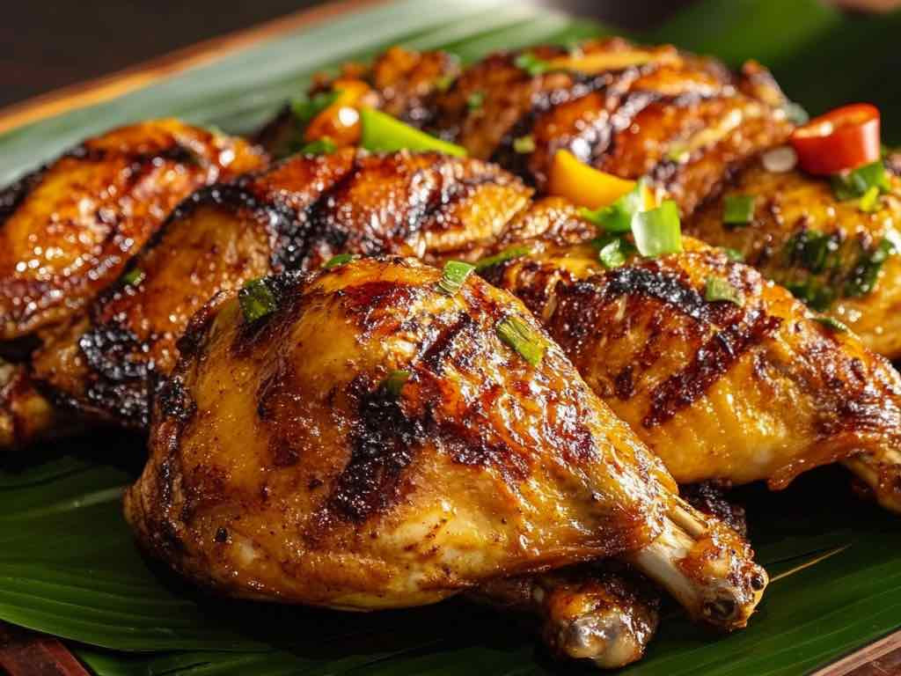

Western Visayas
Chicken Inasal
Chicken Inasal is a famous grilled chicken dish that originated in Bacolod City, Negros Occidental. Unlike standard barbecue that uses a soy sauce marinade, Inasal is marinated in a mixture of calamansi, pepper, coconut vinegar, and annatto (atsuete), giving it a distinct yellowish-orange color and a tangy, savory flavor. It is heavily basted with annatto oil while grilling over hot coals, which keeps the meat incredibly juicy and smoky. It is best enjoyed with garlic rice and a dipping sauce made of sinamak (spiced vinegar) and soy sauce.

Gather
Ingredients
- Chicken quarters (leg and thigh)
- Lemongrass (tanglad), pounded and chopped
- Garlic, minced
- Ginger, minced
- Coconut vinegar (or cane vinegar)
- Calamansi juice
- Brown sugar
- Salt and black pepper
- Annatto oil (atsuete oil), for basting
- Bamboo skewers (optional)
Make it
Recipe
- In a large bowl, combine the lemongrass, garlic, ginger, vinegar, calamansi juice, brown sugar, salt, and pepper to make the marinade.
- Add the chicken pieces, making sure they are well-coated. Marinate in the refrigerator for at least 4 hours, preferably overnight.
- Prepare your grill with hot coals. Skewer the chicken if desired.
- Grill the chicken pieces over medium heat.
- Continuously baste the chicken with annatto oil as you turn it every 5 to 7 minutes. This prevents the chicken from drying out and gives it that signature vibrant color.
- Grill until the chicken is fully cooked with a nice char on the outside (about 20-30 minutes).
- Serve hot with steamed rice and a side of spiced vinegar.